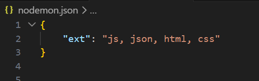
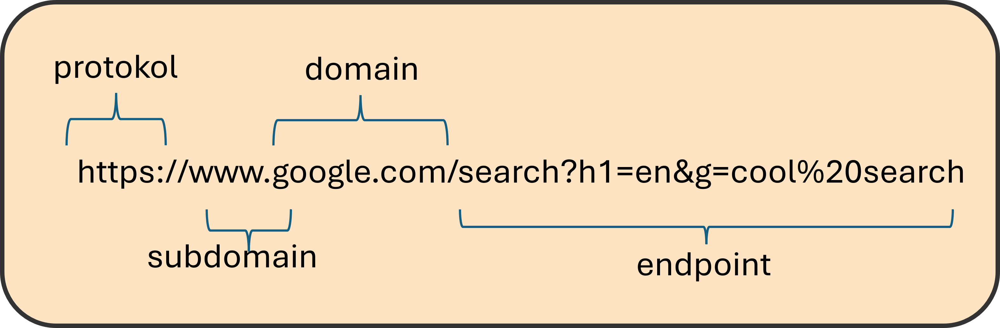

n 3n 3
n 3n 3
nodemon 'your node app name'

for (let i = 0; i < numbers.length; i++) {
console.log(numbers[i]);
}
numbers.forEach((number) => console.log(number));
let list = [4, 5, 6];
for (let i in list) {
console.log(i); // "0", "1", "2" <- strings
}
for (let i of list) {
console.log(i); // 4, 5, 6 <- numbers
}
let index = 0;
for (number of numbers) {
if (index % 2 === 1) {
oddIndexSideEffect.push(Number(number));
}
index++;
}
console.log(oddIndexSideEffect);
const oddNumbers = numbers.filter((element, index) => index % 2 === 1);
console.log(oddNumbers);
for (index in numbers) {
numbers[index] = numbers[index] * 2;
}
const doubledList = numbers.map((number) => number * 2);
console.log(numbers);
console.log(doubledList);

app.post('/dinosaurs', (req, res) => {
console.log(req.body);
res.send(req.body);
});